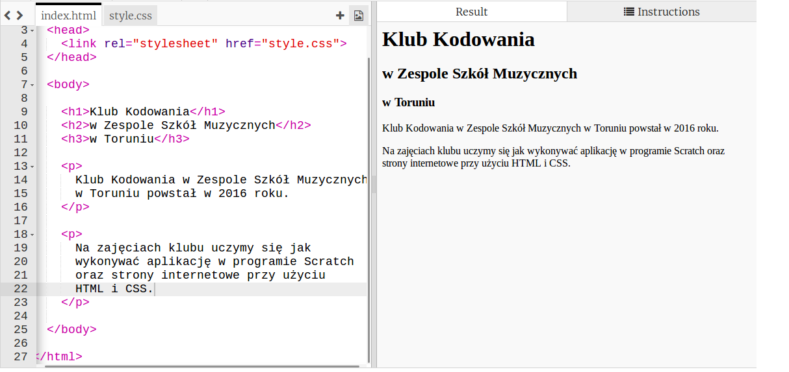
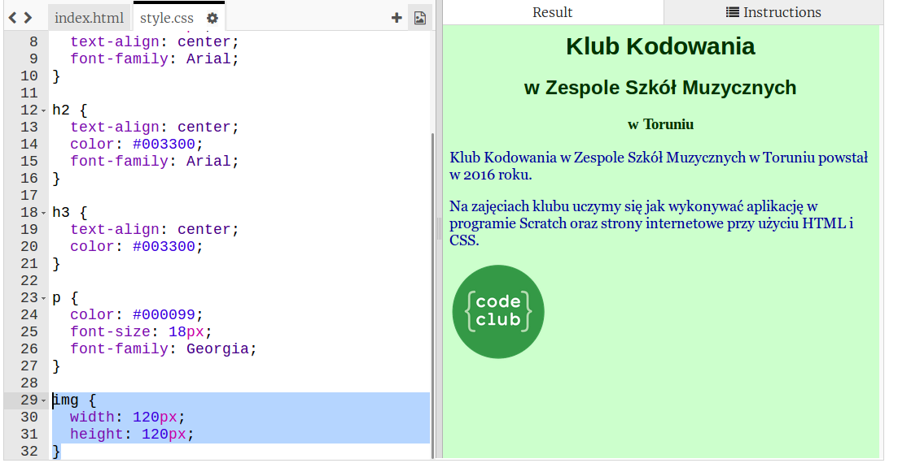
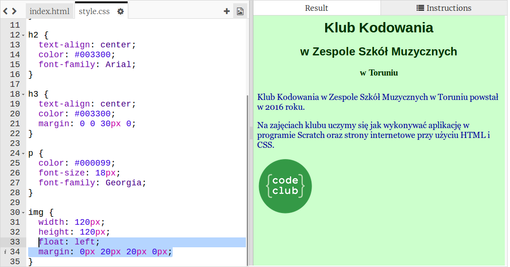
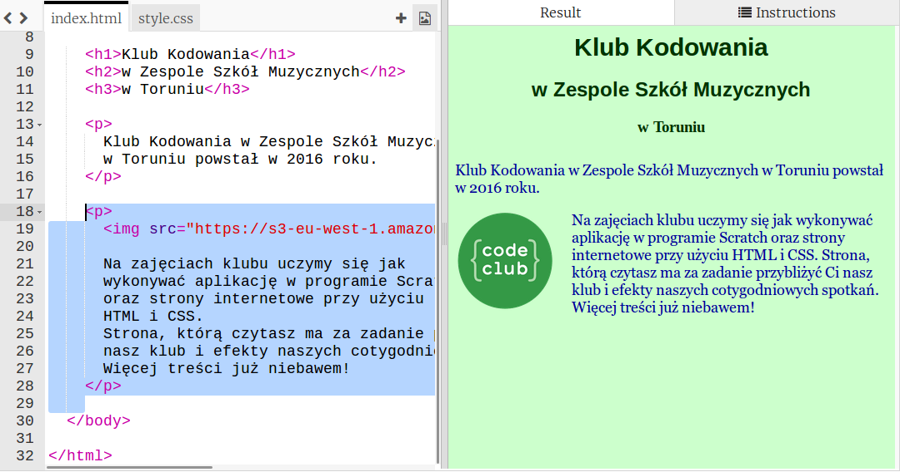

Wstęp
Zadanie dodatkowe w tym semestrze polegać będzie na stworzeniu własnej strony internetowej. Do jej przygotowania użyjemy edytora Trinket. Po zakończeniu semestru Twoja strona, jeśli tego zechcesz, zostanie opublikowana w internecie i każdy będzie mógł ją zobaczyć!
Wybierz temat
Zadania do wykonania
-
Otwórz szablon pustej strony w edytorze Trinket klikając na ten link.
-
Użyj opcji "remix" aby zapisać szablon w Twoich trinketach.
-
Teraz możemy rozpocząć pracę! Wybierz temat, o jakim chciałbyś stworzyć stronę internetową. To może być twoje hobby, twój ulubiony film, książka, zespół piłkarski, miasto czy miejsce, w którym byłeś na wakacjach.
-
Ja wybrałem jako temat Kluby Kodowania, tak więc przez kolejne lekcje będziesz widział jak powstaje strona o zajęciach, w których uczestniczysz. W ten sposób będziesz poznawał tajniki tworzenia stron internetowych.
Zapisz swój projekt
Treść
Zadania do wykonania
-
Strona potrzebuje nagłówka. Nagłówek umieszcza się w specjalnych znacznikach:
h1,h2,h3,h4,h5ih6.Umieść tytuł swojej strony korzystając z powyższych znaczników. Pamiętaj, na stronie powinien znaleźć się przynajmniej jeden zacznik
h1. -
Ja użyłem aż trzech znaczników, oto jak wygląda moja strona:
-
Niewiele, prawda? To nic, dodajmy jakąś treść. Opisz w kilku zdaniach, o czym będzie twoja strona internetowa.
Aby dodać opis skorzystaj z paragrafów, czyli akapitów tekstu, do tego celu użyjemy znaczników
p: -
Oto jak wygląda obecnie moja strona:

-
Dodałeś już opis swojej strony? Jeśli tak, to świetnie. Wiesz, że wewnątrz znaczników
pmożna tez użyć znaczenikastrong, który pogrubi tekst? Teraz możemy przejść do dodawania grafiki!
Zapisz swój projekt
Grafika
Zadania do wykonania
-
Sam tekst byłby nudny, dodajmy grafikę do naszej strony internetowej. Jeżeli robisz stronę o grach komputerowych, możesz tutaj użyć grafik z tych gier. Postaraj się wyszukać je w internecie lub poproś prowadzącego zajęcia o pomoc.
Grafiki umieszcza się znacznikiem
img. -
Ja dodałem logo Klubów Kodowania:
-
Jak pewnie zauważyłeś, znacznik
imgma pewienatrybut-src. Jest to skrót od angielskiego słowa "source", które oznacza źródło. Jeśli chcesz umieścić jakiś obrazek, musisz znać jegoadres url, który trzeba podać jako wartość atrybutusrc. Tak jak na powyższym przykładzie. -
Możesz też dodać obrazek do galerii obrazków swojego edytora:
-
Moja strona wygląda tak:
A Twoja? Pokaż to co zrobiłeś do tej pory prowadzącemu zajęcia.
Zapisz swój projekt
Style - kolory
Zadania do wykonania
-
Pewnie zauwazyłeś, że instrukcja, którą czytasz, to też strona internetowa i wygląda nieco ładniej niż to co udało nam się stworzyć do tej pory. To wszystko zasługa styli, teraz więc nauczymy się jak można zmieniać style strony. Przejdź do zakładki
style.css. -
Zaczniemy od koloru. Wiele elementów (znaczników) może mieć jakieś tło i kolor tekstu. Np. cała strona może być czerwona, a kolor tekstu żółty. Każdy paragraf też może mieć kolor tła.
Zmieńmy kolor tła dla strony. W tym celu użyjemy
wybieraka kolorów (ang. color picker)z tej strony (kliknij).. Tutaj znajdziesz różnokolorowy plaster miodu. Wybierz kolor, który będzie dobrze wyglądał jako tło Twojej strony. Ja wybrałem ten: -
Jak użyć tego koloru? Zauważ, że pod dużym kwadratem z podglądem wybranego koloru na powyższej grafice widać napis:
#ccffcc- to jest oznaczenie koloru w zapisie szesnastkowym. Każdy kolor ma takie oznaczenie. Jeśli nie potrafisz znaleźć oznaczenia swojego koloru, poproś prowadzącego o pomoc. Możesz tez użyć angielskich nazw kolorów, takich jakred,greeni wiele wiele innych.Teraz zmienimy tło strony:
-
Widzisz, strona zmieniła kolor na jasnozielony. Zauważ, że do ostylowania jej tła, użyliśmy właściwości
background, którą ustawiliśmy dla elementubody. "Background" oznacza "tło" po angielsku.Myślisz, że można ustawić tło dla nagłówka pierwszego poziomu -
h1? Wybierz inny kolor z wybieraka i spróbuj: -
Jaki kolor wybrałeś? Czy nagłówek zmienił tło? Jeśli nie, zapytaj dlaczego tak się stało prowadzącego zajęcia.
Co o wybranych przez Ciebie kolorach myślą Twoi koledzy? Czy pasują do tematyki strony? Zapytaj ich o to!
-
Czas na zmianę koloru tekstu! To będzie proste - wybierz jakiś kolor z wybieraka kolorów, przejdź do zakładki
style.cssi dodaj nowe style dla elementup: -
Widzisz? Tekst zmienił swój kolor. Jest teraz niebieski. Czy Tobie udało się zmienić kolor tekstu? Jeśli nie, poproś o pomoc prowadzącego.
Style - tekst
Zadania do wykonania
-
Teraz zmienimy wygląd tekstu. Poza zmianą jego koloru możemy także zadecydować o tym, jaką powinien mieć wielkość i krój.
-
Do zmiany wielkości tekstu służy właściwość
font-size, można jej uzyć w ten sposób: -
Pewnie zauważyłeś, że zmieniłem kolor tekstu nagłówka i paragrafu. Każdy element może mieć wiele właściwości, każda z nich powinna być oddzielona od następnej znakiem
;(średnik) i najlepiej, dla większej czytelności, umieszczać ją w nowej linijce. -
Poza rozmiarem tekstu i jego kolorem możemy zmienić też jego krój, do tego służy właściwość
font-family. Krój to nic innego jak wygląd danego tekstu, w internecie znaleźć można wiele darmowych krojów.Poza tym możemy też wyśrodkować tekst, lub sprawić, żeby był wyrównany do prawej lub lewej strony (lewa strona jest domyślna), a wszystko to za sprawą właściwości
text-align.Oto przykład tego, co możesz zrobić ze swoim tekstem, postaraj się również użyć nowych właściwości:
-
Wiesz już sporo na temat tego jak można ostylować tekst na swojej stronie, wykorzystaj te wiedzę i spraw, żeby Twoja strona internegowa wyglądała dokładnie tak jak chcesz. Jeśli masz pytania, poproś prowadzącego zajęcia o pomoc.
Oto jak obecnie wygląda nasza przykładowa strona internegowa:

Zapisz swój projekt
Style - rozmiar i odległości
Zadania do wykonania
-
Obrazek w naszym projekcie jest trochę za duży, prawda? Zmniejszmy go nieco. Do zmiany rozmiaru elementów służą właściwości
width(szerokość) iheight(wysokość), których wartości podajemy np. w jednostcepxco znaczy "pixel" - najmniejsza jednostka widoczna na ekranie. Możesz też użyć innych jednostek, niektóre z nich znasz:%,cm,mm. Jeśli watrość wynosi0, nie musisz używać żadnej jednostki.Zmieńmy wysokość i szerokość jakiegoś obrazka:

-
Ok, jak widać, teraz obrazek jest znacznie mniejszy. Możesz w ten sposób również zmieniać rozmiar elementów
div, które poznałeś w poprzednich projektach. Nie mamy ich jeszcze na naszej stronie ale nic nie stoi na przeszkodzie, abyś dodał taki element, jeśli potrzebujesz. -
Poza rozmiarem, możemy też zmieniać odległości pomiędzy elementami, do tego potrzebna będzie właściwość
margin(maringes), która przyjmuje cztery wartości, odpowiednio dla marginesu górnego, prawego, dolnego i lewego, a więc taki zapis:margin: 1px 2px 3px 4px;oznacza, że element będzie miał 1px marginesu górnego, 2 pixele marginesu prawego, 3 pixele marginesu dolnego i 4 pixele marginesu lewego.Sprawdźmy działanie tego w naszym projekcie, ja przesunąłem element obrazka wewnątrz paragrafu i zmieniłem odległości pomiedzy paragrafem a nagłówkami. Zauważ, że dodałem również właściwość
float: left;. Wiesz do czego ona służy? Jeśli nie, zapytaj prowadzącego zajęcia.Zmiana styli dała taki efekt:

Przeniesienie elementu
imgwewnątrz elementuppoprawiło sytuację:
-
Na dzisiaj to wszystko, jeśli masz jeszcze chwilę czasu, spróbuj pozmieniać różne wartości w twoich stylach i sprawdzić, jaki będzie tego efekt. Poszukaj najładniejszego rozwiązania, poproś kolegów o podpowiedź i ocenę. Możesz też rozbudować stronę, dodać nowe paragrafy, nagłówki między nimi i zdjęcia lub grafiki.